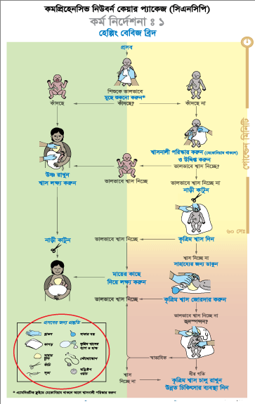
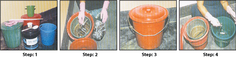

একজন দক্ষ স্বাস্থ্যকর্মী প্রত্যেকটি প্রসবের সময় উপস্থিত থেকে প্রয়োজনীয় মুর্হূততোৎক্ষণিক পদক্ষেপসমূহ গ্রহণ করে নবজাতকের জীবনবাঁচাতে বিশেষ ভূমিকা রাখতে পারেন। তিনি জরুরি প্রয়োজনে শিশুর শ্বাসে সহায়তা দিয়ে নবজাতকের মৃত্যু ও অসুস্থতা রোধ করে সুস্থ জীবন নিশ্চিত করতে পারেন। শুধু একজন দক্ষ স্বাস্থ্যকর্মীর উপস্থিতিই নয়, মা ও নবজাতকের মৃত্যু রোধে প্রতিটি প্রসবের পূর্বে প্রয়োজনীয় প্রস্তুতি গ্রহণ করা খুবই গুরুত্বপূর্ণ।
প্রসবের প্রস্তুতি
প্রসবের প্রস্তুতি হিসাবে একজন সহায়তাকারী নির্বাচন করতে হবে এবং জরুরি অবস্থায় তার করণীয়সমূহ বুঝিয়ে দিতে হবে।
- একজন সহায়তাকারী প্রসূতি মা’কে সাহায্য করতে পারেন বা সাহায্যের প্রয়োজনে অন্য কাউকে ডেকে আনতে পারেন
- তিনি নবজাতকের যত্ন নিতে ও স্বাস্থ্যকর্মীকে সহায়তা দিতে পারেন
প্রসব স্থানের প্রস্তুতি
শিশুর জন্মগ্রহণের স্থানটি অবশ্যই পরিষ্কার হতে হবে, মায়ের হাত ও শরীরের সামনের অংশ মুছে পরিষ্কার করে নিতে হবে। কারণ নবজাতককে জন্মের পর মায়ের ত্বকের স্পর্শে রাখতে হবে।
উষ্ণতা: ঘরের দরজা জানালা বন্ধ রাখতে হবে যাতে শিশুটি ঠান্ডা না হয়ে যায়। প্রয়োজনে ঘর উষ্ণ রাখার ব্যবস্থা নিতে হবে।
আলো: প্রসব স্থানে পর্যাপ্ত আলো থাকা দরকার। প্রয়োজনে অতিরিক্ত আলোর ব্যবস্থা নিতে হবে। যেমন: চার্জার লাইট, স্পট লাইট ইত্যাদি।
হাত ধোয়া: ভালোভাবে হাত ধোয়া সংক্রমণ প্রতিরোধে সহায়ক। সাবান ও পরিষ্কার পানি দিয়ে ভালোভাবে হাত ধুয়ে নিতে হবে। প্রতিটি প্রসবের আগে ও পরে এবং মা ও শিশুর যত্ন নেবার আগে ও পরে হাত পরিষ্কার করে নিতে হবে। রক্তের ও দেহরসের মাধ্যমে ছড়ায় এমন রোগ থেকে সুরক্ষার জন্য গ্লাভস্ স্ব্যবহার করতে হবে।
কৃত্রিম শ্বাস দেয়ার জায়গা: নবজাতকের জন্য পরিষ্কার সমতল শুকনো জায়গা (যেমন টেবিল) তৈরি রাখতে হবে।
যন্ত্রপাতি: নিরাপদ ডেলিভারী কিট (দুটি পরিস্কার শুকনা সুতি কাপড়, টুপি, জীবাণুমুক্ত সুতা ও কাঁচি বা ব্লেড, গ্লাভস্), সাকশন যন্ত্র, স্টেথোস্কোপ, ঘড়ি/টাইমার, কৃত্রিম শ্বাসের জন্য ব্যাগ-মাস্ক গুছিয়ে রাখতে হবে।
ব্যাগ-মাস্কের কার্যকারিতা: ব্যাগ-মাস্কের কার্যকারিতা পরীক্ষা করে ব্যবহারের জন্য যথাস্থানে রাখতে হবে।
ব্যাগ-মাস্কের কার্যকারিতা পরীক্ষা করার ধাপ:
ব্যাগ ও মাস্ক সংযুক্ত অবস্থায় মাস্কের বহির্গমন পথের দিকে লক্ষ্যরেেখ ব্যাগে চাপ দিতে হবে (১ নং ছবির মতো করে)। যদি বহির্গমন পথের ভাল্ব ব্যাগে চাপ দেয়ার সাথে সাথে খুলে যায়, তাহলে বুঝতে হবে যন্ত্রটি কৃত্রিম শ্বাস দেবার জন্য তৈরি আছে।
মাস্কটি হাতের তালুর উপর চেপে ধরতে হবে যাতে রিম ও হাতের তালুর মাঝে কোন ফাঁক না থাকে। তারপর ব্যাগটিতে যথেষ্ট জোরে চাপ দিতে হবে যাতে চাপমুক্ত করার পর প্রেসার ভাল্বটি খুলে যায় (২ নং ছবির মতো করে)। এতে করে বোঝা যাবে, যদি শিশুর শ্বাসনালী বন্ধ থাকে বা কৃত্রিম শ্বাস যন্ত্র দিয়ে বাতাস শিশুর ফুসফুসে যেতে না পারে, তবে চাপমুক্ত করার ভাল্ব দিয়ে বাতাস বেরিয়ে আসবে।
মাস্কের রিম পরীক্ষা করে দেখতে হবে কোথাও ভাঙ্গা আছে কি-না যাতে সম্পূর্ণ বায়ু নিরোধক অবস্থা তরৈি হতে কোন সমস্যা না হয়।
কৃত্রিম শ্বাসের জন্য ব্যাগ-মাস্ক ও অনান্য যন্ত্রপাতি জীবাণুমুক্ত করার ক্ষেত্রে: প্রতিটি প্রসবের পূর্বে প্রসব প্রস্তুতির অংশ হিসাবে ব্যবহৃত যন্ত্রপাতি, কৃত্রিম শ্বাসের জন্য ব্যবহৃত ব্যাগ-মাস্ক ও সাকার যন্ত্রের অংশগুলো খুলে ০.৫% ক্লোরিন দ্রবণ দিয়ে ১০ মিনিট ভিজিয়ে রেখে পরিষ্কারপানি দিয়ে ধুয়ে নিতে হবে। সকল যন্ত্রপাতি ২০ মিনিট পানিতে ফুটিয়েনিতে হবে বা অটোক্লেভ করতে হবে। ব্যবহারের পূর্বে যন্ত্রাংশগুলো জোড়া লাগিয়ে ব্যবহার করতে হবে। প্রতিবার ব্যবহারের পরে সকল যন্ত্রপাতি পরিষ্কার করে রাখতে হবে।
মনে রাখতে হবে যে, সর্বোচ্চ ১০০ বার পর্যন্তকৃত্রিম শ্বাসের জন্য ব্যবহৃত ব্যাগ-মাস্ক ও সাকার ফুটানো বা অটোক্লেভ করা যাবে। এর বেশিফুটালে বা অটোক্লেভ করলে এসব যন্ত্রের কার্যক্ষমতা নষ্ট হয়ে যাবে।
জরুরি অবস্থার পরিকল্পনা: জরুরি অবস্থার পরিকল্পনার অংশ হিসাবে উন্নত সেবাকেন্দ্রের সঙ্গে যোগাযোগ করা ও প্রয়োজনীয় যানবাহনের ব্যবস্থা রাখা বিশেষ প্রয়োজন।

হাত ধোয়ার পদ্ধতি/ধাপসমূহ
হাত ধোয়ার জন্য সাবান ও পানি (পরিষ্কার ফুটানো পানি বা টিউবওয়েলের পানি) প্রস্তুত রাখতে হবে। যদি কোন টিউবওয়েল না থাকে তবে অন্য কোন পরিষ্কার প্রবহমান পানির ধারায় হাত ধুতে হবে বা একজন সাহায্যকারী হাতে পানি ঢালবেন। হাত ঘড়ি, আংটি বা অন্য কোন অলংকার থাকলে হাতের সব অংশ ঠিকমত পরিষ্কার নাও হতে পারে, তাই হাত ধোয়ার আগে চুড়ি, আংটি, ঘড়ি বা অন্য কোন অলংকার খুলে ফেলতে হবে। হাতের নখ ছোট ও পরিষ্কার রাখতে হবে। সাবান দিয়ে কব্জি পর্যন্ত হাতের প্রতিটি অংশ যেমন আঙ্গুল, তালু, নখ, হাতের উল্টা পিঠ, হাতের কব্জি পর্যন্ত অন্তত ৪০ - ৬০ সেকেন্ড ধরে ঘষে ঘষে ভালভাবে ধুয়ে ফেলতে হবে।
নিম্নোক্ত ধাপগুলো অনুসরণ করে হাত ধুতে হবে:
পানি দিয়ে হাত ভিজাতে হবে (ছবি নং-০)
ভালোভাবে দুই হাতেরকব্জি পর্যন্ত সাবান লাগাতে হবে ((ছবি নং-১)
দুই হাতের তালুতে-তালুতে ঘষতে হবে (ছবি নং-২)
ডান হাতের তালু দিয়ে বাম হাতে উল্টাপিঠ ও আঙ্গুলের ফাঁকে ঘষতে হবে ঠিক একইভাবে এর বিপরীত হাতেও করতে হবে(ছবি নং -৩)
তালু দিয়ে তালুতে ও আঙ্গুলের ফাঁকে ঘষতে হবে (ছবি নং-৪)
দুই হাতের আঙ্গুল একে অপরের সাথে আটকে আঙ্গুলের উল্টা পিঠ ঘষতে হবে (ছবি নং-৫)
বামহাতের বুড়া আঙ্গুল ডান হাতের তালু দিয়ে ঘষতে হবে একইভাবে এর বিপরীত হাতেও করতে হবে (ছবি নং-৬)
বাম হাতের তালুতে ডান হাতের আঙ্গুলের মাথা দিয়ে সামনে পিছনে ঘষতে হবে একইভাবে এর বিপরীত হাতেও করতে হবে(ছবি নং-৭)
পানি দিয়ে হাত ধুয়ে হাত শুকিয়ে নিতে হবে (ছবি নং-৮)
মনে রাখতে হবে:
- ধোয়ার পর সঠিকভাবে হাত শুকানো হাত ধোয়ার একটি অবিচ্ছেদ্য অংশ এবং এর প্রতি গুরুত্ব দিতে হবে
- সহজেই ফেনা হয় এমন কোন ভাল সাবান ব্যবহার করতে হবে
- ভালোভাবে ঘষে ঘষে পরিষ্কার করতে হবে
- হাত ধোয়ার সময় কনুই সবসময় নীচের দিকে করে রাখতে হবে
- দুই হাতের কব্জি পর্যন্ত সকল অংশ ধুয়ে ফেলতে হবে
হাত কিভাবে শুকাতে হবে ?
- হাত ধোয়ার পর পরিষ্কার তোয়ালে ব্যবহার করে বা হাত উপরের দিকে রেখে বাতাসে শুকিয়ে নিতে হবে
- ভেজা হাতে কখনই শিশুকে ধরা যাবে না
কখন হাত ধুতে হবে ?
শিশুর স্বাস্থ্য সুরক্ষার জন্য মা ও শিশুর অন্যান্য পরিচর্যাকারী তাদের হাত সবসময় পরিষ্কার ও নিরাপদ রাখবেন এবং সেজন্য তাকে/তাদেরকে নীচের কাজগুলো করার আগে এবং পরে সাবান ও পানি দিয়ে নিয়মিতভাবে হাত ধুতে হবে:
- প্রসবের সময় মা ও নবজাতককে স্পর্শ করার আগে
- নবজাতককে খাওয়ানোর আগে
- নবজাতকের শারিরীক পরীক্ষার আগে বা ইনজেকশন দেয়ার পূর্বে
- নবজাতককে গোসল করানো বা কাপড় পাল্টে দেয়ার আগে
- নাভীর পরিচর্যা বা নাভীর চারপাশ পরিষ্কার করার আগে
- মলমূত্র পরিষ্কার করার পরে
বিশোধন হচ্ছে সংক্রমণ প্রতিরোধের একটি ধাপ যে প্রক্রিয়ার মাধ্যমে ব্যবহৃত যন্ত্রপাতি ০.৫% ক্লোরিন দ্রবণে ১০ মিনিট ভিজিয়ে রাখলে জীবাণু ধ্বংস হয় ও পরবর্তীতে যন্ত্রপাতি নাড়াচাড়া তুলনামূলকভাবে নিরাপদ হয়।
কেন বিশোধন করবেন
- বিশোধনের মাধ্যমে এইচআইভি এবং হেপাটাইটিসসহ অন্য অনেক ধরনের জীবাণুর সংক্রমণ প্রতিরোধ করা যায়।
- যন্ত্রপাতি/সরঞ্জাম নাড়াচাড়া/প্রক্রিয়াজাতকরণ বা ব্যবহারের সময় ব্যবহৃত যন্ত্রপাতি/সরঞ্জামাদির সংক্রমণ থেকে সেবাদানকারীকে নিরাপদ রাখে।
বিশোধনের ধাপ
- ধাপ ১: লাল ঢাকনাযুক্ত বালতিতে ৫ লিটার পানি নিয়ে এতে ১০০ গ্রাম (১লিটার পানিতে ২০ গ্রাম) ব্লিচিং পাউডার মিশিয়ে নাড়ন কাঠি দিয়ে নেড়ে ০.৫% ক্লোরিন দ্রবণ তৈরি করতে হবে এবং প্লাস্টিক ছাঁকনি বালতিতে ডুবিয়ে বালতি ঢাকনা দিয়ে ঢেকে রাখতে হবে।
- ধাপ ২: যন্ত্রপাতি ব্যবহারের পরপরই ক্লোরিন দ্রবণ পূর্ণ বালতিতে সম্পূর্ণ ডুবিয়ে রাখতে হবে। বিভিন্ন অংশে সংযোজিত যন্ত্রসমূহ খুলে ডুবাতে হবে। লক্ষ্য রাখতে হবে সব যন্ত্রপাতি যেন দ্রবণে সম্পূর্ণ ডুবে থাকে। বালতি ঢাকনা দিয়ে ঢেকে রাখতে হবে।
- ধাপ ৩: সর্বশেষ যন্ত্রটি ডুবানোর পর ঢাকনা বন্ধ অবস্থায় ১০ মিনিট যন্ত্রপাতিগুলো ক্লোরিন দ্রবণে বিশোধন করতে হবে।
- ধাপ ৪: ১০ মিনিট পর প্লাস্টিকের ছাঁকনি ক্লোরিন দ্রবণ থেকে তুলে বিশোধিত যন্ত্রপাতিগুলো পরিষ্কার পানিপূর্ণ সবুজ বালতিতে রেখে সময়মত ধুয়ে ফেলতে হবে।
